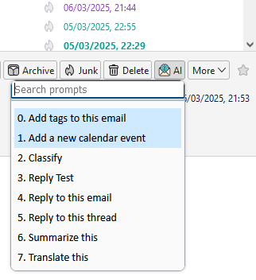
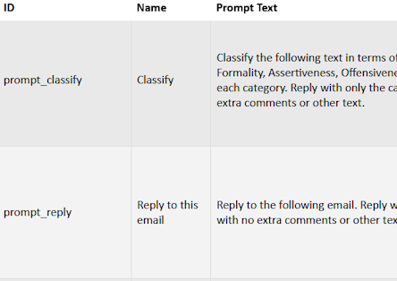
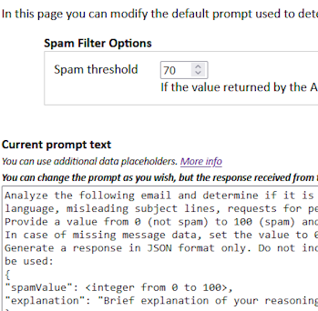

__MSG_ask_chatgptweb_permission_2__
ThunderAI
Welcome to ThunderAI!
This add-on is designed to enhance your email management with the power of AI.
With ThunderAI, you can streamline your inbox, generate smart replies, summarize emails, and much more—all with the help of artificial intelligence.
On this page, you'll find an overview of the key features available to help you make the most of ThunderAI.
Get ready to experience a smarter, more efficient way to handle your emails!
Let's see how to make best use of this add-on!
Using Prompts

On each message, there is a button that will allow you to open the prompts menu.
Here you can choose the prompt in different ways:
- Search box: Use this to search for part of the prompt.
- Down/Up Arrow: Move through the prompts.
- Press a number: Press a number on the kayboard to choose the corresponding prompt.
- Enter: When you've picked the prompt you'd like, press enter to execute it.
The first two prompts are special ones, that are available only when using an API integration. They work directly without opening the AI Chat webpage.
Defining your Custom Prompts

From the options page you can open the Custom Prompts page.
From there you can add your prompts, and also disable the default ones.
You can find more info here.
While defining your own prompts you can also use data placeholders, that will be substituted with the corresponding information when using the prompt.
You can find more info here.
For example, you can use the placeholder {%mail_subject%} to refer to the subject of the email or {%tags_current_email%} to refer to the tags of the current email.
Automatic features

There are also two automatic features available when using an API integration, which can be activated from the options page:
- Auto Spam Filter: automatically moves the email to the spam folder if it is detected as spam.
- Auto Tagging: automatically assigns tags to the email.
For each of these features, there is an options page to specify the settings and the custom prompt to be used.